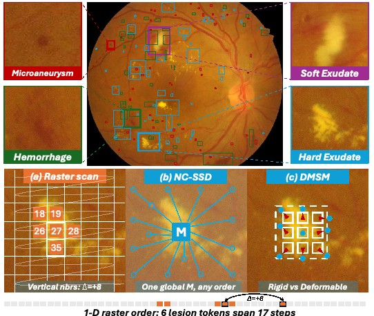

IEEE ISBI’27D²MambaIEEE ISBI’27
Seeing the Small: Deformable Duality Mamba for Retinal Lesion Segmentation
Under review
A retinal lesion segmentation framework combining non-causal state space duality with deformation-aware scanning to capture small and irregular lesions.